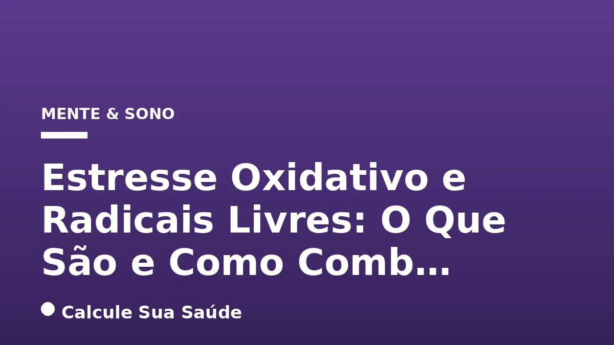

Aviso médico importante
Este conteúdo é educativo e informativo e não substitui a consulta, o diagnóstico ou o tratamento de um profissional de saúde. Em caso de sintomas, procure orientação médica.
Índice do Artigo
- 1. Radicais Livres: Moléculas Reativas Essenciais e Perigosas
- 2. Espécies Reativas de Oxigênio (ERO) e Nitrogênio (ERN): Os Principais Oxidantes
- 3. O Equilíbrio Delicado: Compreendendo o Estresse Oxidativo
- 4. Fontes de Radicais Livres: Fatores Endógenos e Exógenos
- 5. Impacto do Estresse Oxidativo na Saúde: Doenças Associadas
- 6. Sintomas do Estresse Oxidativo: Uma Abordagem Indireta
- 7. Diagnóstico do Estresse Oxidativo: Biomarcadores e Índices
- 8. Estratégias de Prevenção: Dieta, Estilo de Vida e Defesas Naturais
- 9. Abordagens Terapêuticas: Suplementos, Fitoquímicos e Intervenções Específicas
- 10. Antioxidantes: Mitos e Verdades Baseadas na Ciência
- 11. Estresse Oxidativo e Saúde Mental no Brasil: O Caso da Depressão
- 12. O Papel do Exercício Físico: Equilíbrio entre Benefício e Dano
- 13. Prevenindo o Estresse Oxidativo no Dia a Dia: Dicas Práticas
- 14. A Importância de uma Abordagem Integrada e Individualizada
- 15. Perguntas frequentes
Em nosso organismo, uma complexa rede de processos bioquímicos opera incessantemente para manter a vida. No cerne dessa atividade, surgem moléculas altamente reativas, conhecidas como radicais livres, que desempenham papéis duplos: essenciais para funções fisiológicas e, em excesso, potencialmente danosas. O equilíbrio delicado entre a produção dessas espécies reativas e a capacidade de defesa do corpo é fundamental para a saúde, e seu desequilíbrio é o que define o estresse oxidativo.
O estresse oxidativo não é uma doença em si, mas um mecanismo subjacente que contribui significativamente para o desenvolvimento e a progressão de inúmeras condições crônicas e degenerativas. Compreender o que são os radicais livres, como eles se formam e quais fatores influenciam o estresse oxidativo é o primeiro passo para adotar estratégias eficazes de prevenção e manejo, sempre com base em evidências científicas robustas.
Neste artigo aprofundado, exploraremos os conceitos-chave, as causas endógenas e exógenas, os métodos de diagnóstico e as abordagens preventivas e terapêuticas para combater o estresse oxidativo, desmistificando crenças populares e focando no que a ciência realmente nos diz sobre a manutenção da saúde celular e sistêmica.
Em resumo
- Radicais livres são moléculas instáveis que, em excesso, causam danos celulares, enquanto o estresse oxidativo é o desequilíbrio entre sua produção e a defesa antioxidante do corpo.
- A geração de radicais livres é influenciada por fatores internos (metabolismo, inflamação) e externos (poluição, dieta ultraprocessada, tabagismo, álcool, exercício físico excessivo).
- Não há sintomas diretos de estresse oxidativo; suas manifestações são as doenças crônicas e degenerativas às quais ele contribui, como a depressão.
- O diagnóstico envolve a medição de biomarcadores específicos, como o Índice de Estresse Oxidativo (OSI) e a Razão de Glutationa (GSSG/GSH).
- A prevenção foca em uma dieta rica em antioxidantes (frutas, vegetais, crucíferos) e um estilo de vida saudável, incluindo atividade física moderada.
- Embora a suplementação de antioxidantes seja controversa, fitoquímicos presentes em alimentos e plantas medicinais mostram grande potencial na prevenção e tratamento de doenças associadas ao estresse oxidativo.
1. Radicais Livres: Moléculas Reativas Essenciais e Perigosas
Para compreender o estresse oxidativo, é fundamental primeiro entender o que são os radicais livres. Em termos bioquímicos, radicais livres são átomos ou moléculas que possuem um elétron desemparelhado em sua órbita mais externa. Essa característica os torna extremamente instáveis e altamente reativos, buscando avidamente um elétron para alcançar a estabilidade. Ao fazê-lo, eles podem reagir com componentes celulares vitais, como proteínas, lipídios e o próprio DNA, iniciando uma cadeia de reações que pode levar a danos significativos.
Contrariamente à percepção comum, os radicais livres não são meramente 'vilões'. Em concentrações baixas a moderadas, eles desempenham papéis fisiológicos cruciais. Participam da sinalização celular, um processo fundamental para a comunicação entre as células, e são componentes essenciais do sistema imunológico, auxiliando na defesa contra patógenos. Além disso, estão envolvidos na produção de energia dentro das mitocôndrias, as 'usinas' das nossas células. O problema surge quando há um desequilíbrio, e a produção dessas espécies reativas excede a capacidade do corpo de neutralizá-las.
2. Espécies Reativas de Oxigênio (ERO) e Nitrogênio (ERN): Os Principais Oxidantes
Dentro da vasta categoria de radicais livres, dois grupos se destacam pela sua relevância biológica e impacto na saúde: as Espécies Reativas de Oxigênio (ERO) e as Espécies Reativas de Nitrogênio (ERN). Estes termos são mais abrangentes e incluem não apenas os radicais livres propriamente ditos, mas também compostos não radicalares que são agentes oxidantes potentes ou que podem ser facilmente convertidos em radicais livres.
As EROs são derivadas do oxigênio e incluem o radical superóxido (O₂•−), o radical hidroxila (•OH), o peróxido de hidrogênio (H₂O₂), entre outros. O oxigênio, essencial para a vida aeróbica, também é a fonte primária dessas espécies reativas. As ERNs, por sua vez, são derivadas do nitrogênio, sendo o óxido nítrico (NO•) e o peroxinitrito (ONOO−) exemplos proeminentes. A interação complexa entre EROs e ERNs pode amplificar os danos oxidativos, especialmente em condições de inflamação crônica ou exposição a toxinas. A compreensão dessas espécies é vital, pois elas representam os principais agentes por trás do estresse oxidativo.
3. O Equilíbrio Delicado: Compreendendo o Estresse Oxidativo
O Estresse Oxidativo (EO) é, em sua essência, um desequilíbrio. Ele ocorre quando a produção de espécies reativas (oxidantes) supera a capacidade dos sistemas de defesa antioxidante do organismo de neutralizá-las e reparar os danos causados. É um estado de sobrecarga oxidativa que pode levar a uma série de consequências deletérias para as células e tecidos.
O corpo humano possui um sofisticado sistema de defesa antioxidante, que inclui enzimas como a superóxido dismutase (SOD), catalase (CAT) e glutationa peroxidase (GPx), além de antioxidantes não enzimáticos obtidos da dieta, como vitaminas C e E, e polifenóis. Quando a balança pende para o lado dos oxidantes, essas defesas podem ser sobrecarregadas, permitindo que os radicais livres ataquem componentes celulares essenciais. Esse ataque pode comprometer a função celular, alterar a estrutura do DNA e das proteínas, e iniciar processos que culminam em doenças crônicas e envelhecimento precoce. O estresse oxidativo é, portanto, um fator contribuinte fundamental em muitas patologias.
4. Fontes de Radicais Livres: Fatores Endógenos e Exógenos
A geração de radicais livres e o subsequente estresse oxidativo são influenciados por uma miríade de fatores, que podem ser classificados em endógenos (originados dentro do próprio corpo) e exógenos (provenientes do ambiente externo). A interação entre esses fatores determina a carga oxidativa total que o organismo precisa gerenciar.
Fatores Endógenos
Os principais fatores endógenos incluem o metabolismo celular normal, especialmente a produção de energia nas mitocôndrias. Durante a respiração celular, uma pequena porcentagem do oxigênio consumido é convertida em espécies reativas. Processos inflamatórios, que são respostas do sistema imunológico a lesões ou infecções, também geram grandes quantidades de radicais livres como parte da defesa. Reações enzimáticas específicas e o estresse do retículo endoplasmático, causado por proteínas mal dobradas, são outras fontes internas significativas. Esses processos são inerentes à vida, mas podem ser exacerbados por condições patológicas.
Fatores Exógenos
Os fatores exógenos são aqueles aos quais somos expostos diariamente e que podem ser, em grande parte, controlados. A exposição a poluentes ambientais, como a fumaça do cigarro e a poluição do ar, é uma fonte importante. O uso de certos medicamentos, a radiação ultravioleta (UV) e infravermelha (IV) da luz solar, e o consumo excessivo de alimentos ultraprocessados, ricos em gorduras saturadas, açúcares e aditivos químicos, contribuem para a carga oxidativa. O tabagismo e o consumo excessivo de álcool são notórios indutores de estresse oxidativo. Curiosamente, até mesmo a atividade física, quando realizada em excesso, com altíssima intensidade e duração muito prolongada, pode temporariamente aumentar a produção de radicais livres, embora a atividade moderada seja protetora.
| Fatores Endógenos | Fatores Exógenos |
|---|---|
| Metabolismo celular (mitocôndrias) | Poluentes ambientais |
| Processos inflamatórios | Uso de medicamentos |
| Reações enzimáticas | Radiação UV e IV |
| Estresse do retículo endoplasmático | Alimentos ultraprocessados |
| Tabagismo | |
| Consumo excessivo de álcool | |
| Atividade física excessiva |
5. Impacto do Estresse Oxidativo na Saúde: Doenças Associadas
O estresse oxidativo não é uma doença com sintomas próprios e específicos, mas sim um mecanismo fisiopatológico fundamental que contribui para o desenvolvimento e a progressão de uma vasta gama de doenças crônicas e degenerativas. Quando o desequilíbrio entre oxidantes e antioxidantes se mantém por longos períodos, as células e tecidos sofrem danos cumulativos que podem levar a disfunções orgânicas.
Entre as condições de saúde associadas ao estresse oxidativo estão doenças cardiovasculares, como a aterosclerose, onde a oxidação de lipoproteínas de baixa densidade (LDL) desempenha um papel crucial na formação de placas. Também está implicado em doenças neurodegenerativas, como Alzheimer e Parkinson, onde o dano oxidativo aos neurônios contribui para a perda de função cerebral. O câncer, o diabetes mellitus, a obesidade, doenças inflamatórias crônicas e o processo de envelhecimento em geral são outras áreas onde o estresse oxidativo tem um papel reconhecido. A modulação do estresse oxidativo, portanto, é uma estratégia promissora para a prevenção e o manejo de muitas dessas patologias, impactando até mesmo a regulação de colesterol e triglicerídeos.
6. Sintomas do Estresse Oxidativo: Uma Abordagem Indireta
É comum que as pessoas busquem por 'sintomas de estresse oxidativo', esperando encontrar uma lista de sinais diretos que indiquem sua presença. No entanto, o estresse oxidativo, por si só, não apresenta sintomas específicos e universalmente reconhecidos. Ele atua mais como um processo silencioso e subjacente que, ao longo do tempo, danifica as células e tecidos, culminando nas manifestações clínicas de diversas doenças.
Os sintomas que observamos são, na verdade, as manifestações das patologias associadas ao estresse oxidativo. Por exemplo, fadiga crônica, dores articulares, problemas de memória, envelhecimento precoce da pele, e maior suscetibilidade a infecções podem ser indicativos de um processo inflamatório e oxidativo crônico, mas não são exclusivos do estresse oxidativo. Eles são resultados de danos celulares e teciduais que podem ter múltiplas causas, sendo o estresse oxidativo uma delas. Portanto, a identificação do estresse oxidativo requer uma abordagem diagnóstica mais aprofundada, focada em biomarcadores.
7. Diagnóstico do Estresse Oxidativo: Biomarcadores e Índices
Dado que o estresse oxidativo não possui sintomas diretos, seu diagnóstico depende da medição de biomarcadores que refletem o desequilíbrio entre oxidantes e antioxidantes no organismo. A pesquisa científica tem avançado na identificação de métodos confiáveis para avaliar esse estado, permitindo diferenciar o estresse oxidativo relacionado à saúde do relacionado à doença.
Vários índices foram propostos para quantificar o estresse oxidativo em humanos. Entre os mais estudados e com utilidade clínica, destacam-se o Índice de Estresse Oxidativo (OSI), que avalia a relação entre oxidantes e antioxidantes totais; as Razões de Tiol (-SH/TT, -SS/-SH e -SS/TT), que indicam o estado redox de proteínas; a Razão de Glutationa (GSSG/GSH), um indicador crucial do balanço redox intracelular; o Escore de Estresse Oxidativo (OSS); e o OXY-index. Estudos têm demonstrado que o OSI, Oxy-score e OSS são ferramentas confiáveis e práticas para o diagnóstico e monitoramento do estresse oxidativo, oferecendo insights valiosos sobre a saúde metabólica e o risco de doenças.
| Biomarcador/Índice | O que mede |
|---|---|
| Índice de Estresse Oxidativo (OSI) | Relação entre oxidantes e antioxidantes totais |
| Razões de Tiol (-SH/TT, -SS/-SH, -SS/TT) | Estado redox de proteínas |
| Razão de Glutationa (GSSG/GSH) | Balanço redox intracelular |
| Escore de Estresse Oxidativo (OSS) | Avaliação global do estresse oxidativo |
| OXY-index | Capacidade antioxidante total |
8. Estratégias de Prevenção: Dieta, Estilo de Vida e Defesas Naturais
A prevenção e o combate ao estresse oxidativo são pilares fundamentais para a promoção da saúde e a longevidade. As estratégias mais eficazes focam em manter o equilíbrio entre a produção de radicais livres e a capacidade de defesa antioxidante do corpo, principalmente através de escolhas de estilo de vida.
Dieta Rica em Antioxidantes
A alimentação desempenha um papel crucial. O consumo regular de vegetais e frutas está inversamente correlacionado com o risco de doenças crônicas, em grande parte devido à presença de fitoquímicos com propriedades antioxidantes. Alimentos como brócolis, couve-flor, couve-manteiga e couve-de-bruxelas (vegetais crucíferos) são particularmente ricos em compostos bioativos, como o sulforafano, que não só atuam como antioxidantes diretos, mas também ativam enzimas de desintoxicação e defendem as células de toxinas, neutralizando agentes que podem causar danos ao DNA. Uma dieta variada e colorida garante um aporte diversificado desses protetores naturais.
Estilo de Vida Saudável
Além da dieta, um estilo de vida saudável é indispensável. Evitar o tabagismo, que é uma fonte massiva de radicais livres, e o consumo excessivo de álcool são medidas essenciais. Minimizar a exposição à poluição ambiental, sempre que possível, e manter uma alimentação equilibrada, com foco em alimentos integrais e minimamente processados, são cruciais. A prática de atividade física regular, mas sem excessos de intensidade e duração prolongada, também contribui para o equilíbrio redox, fortalecendo as defesas antioxidantes endógenas sem gerar sobrecarga oxidativa.
Sistemas de Defesa Antioxidante Endógenos
Nosso corpo possui mecanismos intrínsecos de defesa antioxidante. Enzimas como a superóxido dismutase (SOD), catalase (CAT) e glutationa peroxidase (GPx) são a primeira linha de defesa, atuando no sequestro e neutralização de ERO e ERN. Manter esses sistemas funcionando de forma otimizada é vital para o equilíbrio redox celular. Uma dieta nutritiva e um estilo de vida ativo apoiam a expressão e a atividade dessas enzimas protetoras.
9. Abordagens Terapêuticas: Suplementos, Fitoquímicos e Intervenções Específicas
A modulação do estresse oxidativo através de intervenções terapêuticas tem sido um campo de intensa pesquisa. Embora a ideia de 'suplementar antioxidantes' seja popular, os resultados científicos sobre a suplementação isolada são frequentemente controversos, com estudos mostrando benefícios, efeitos nulos ou até adversos em certas condições. Isso sugere que a complexidade do sistema antioxidante do corpo não pode ser replicada por doses elevadas de um único composto.
Fitoquímicos e Nutrição
No entanto, fitoquímicos presentes em uma ampla gama de alimentos e plantas medicinais demonstram um papel fundamental na prevenção e tratamento de doenças crônicas induzidas pelo estresse oxidativo. Esses compostos, encontrados em frutas, vegetais, grãos e ervas, exibem propriedades antioxidantes, anti-inflamatórias, antienvelhecimento, anticancerígenas e protetoras contra doenças cardiovasculares, diabetes mellitus, obesidade e condições neurodegenerativas. A sinergia entre os diversos fitoquímicos em uma dieta balanceada parece ser mais eficaz do que a ingestão de suplementos isolados.
Abordagens Terapêuticas Específicas: O Exemplo da Depressão
Um exemplo notável da aplicação de intervenções antioxidantes é no contexto da depressão. Estudos têm evidenciado a relação entre neuroinflamação, estresse oxidativo e a fisiopatologia da depressão. Estratégias que visam reduzir marcadores de estresse oxidativo têm mostrado eficácia. Isso inclui o uso de fármacos como N-acetilcisteína (NAC) e timoquinona, extratos naturais como os de Caesalpinia pulcherrima e ayahuasca (em contextos de pesquisa controlada), e a suplementação com probióticos e ácidos graxos essenciais (ômega 3, 6 e 9). Além disso, abordagens não farmacológicas, como dietas ricas em antioxidantes, atividade física regular e estimulação magnética transcraniana repetitiva, também demonstraram efeitos positivos. É crucial ressaltar que, embora promissores, mais estudos são necessários para avaliar a eficácia a longo prazo e a segurança dessas intervenções.
10. Antioxidantes: Mitos e Verdades Baseadas na Ciência
A popularidade dos antioxidantes levou à proliferação de muitos mitos. É fundamental distinguir o que a ciência realmente comprova do que é apenas especulação ou promessa sem fundamento.
Mito: Antioxidantes curam doenças.
Ciência: Um relatório de Harvard, nos Estados Unidos, confirma que, embora haja uma ligação entre o excesso de radicais livres e doenças, os antioxidantes não curam doenças. Eles atuam neutralizando os radicais livres e preservando as células, mas não são uma cura milagrosa. A ideia de que uma pílula antioxidante pode reverter uma condição crônica é simplista e não encontra respaldo na maioria das evidências científicas robustas.
Mito: Antioxidantes são a chave para uma vida longa.
Ciência: A longevidade não depende exclusivamente dessas substâncias. A expectativa de vida é pautada por uma série de fatores interconectados, incluindo genética, ambiente, estilo de vida geral e outros hábitos alimentares, como a ingestão adequada de proteínas, carboidratos e gorduras. Embora os antioxidantes contribuam para a saúde celular e possam mitigar o envelhecimento precoce, eles são apenas uma peça do complexo quebra-cabeça da longevidade. Uma abordagem holística da saúde é sempre mais eficaz do que focar em um único componente.
A verdade é que os antioxidantes são componentes vitais de uma dieta saudável e um estilo de vida equilibrado, mas não devem ser vistos como soluções mágicas ou substitutos para a medicina convencional.
11. Estresse Oxidativo e Saúde Mental no Brasil: O Caso da Depressão
A relação entre estresse oxidativo e saúde mental tem ganhado crescente atenção na comunidade científica. No Brasil, dados epidemiológicos recentes destacam a urgência de compreender melhor essa conexão. Um relatório do Ministério da Saúde de 2022 observou um aumento de cerca de 27% nos casos de depressão no país no cenário pós-pandêmico. Este aumento alarmante sublinha a necessidade de explorar todos os fatores contribuintes e estratégias de manejo.
Estudos analisados evidenciam uma relação significativa entre o processo de neuroinflamação, associado ao estresse oxidativo, e a depressão. O cérebro, apesar de representar apenas cerca de 2% do peso corporal, consome aproximadamente 20% do oxigênio total do organismo, tornando-o particularmente vulnerável ao dano oxidativo. O desequilíbrio redox pode afetar neurotransmissores, a neuroplasticidade e a integridade neuronal, contribuindo para a fisiopatologia dos transtornos de humor. Embora não existam dados epidemiológicos específicos sobre a prevalência direta do estresse oxidativo na população brasileira em geral, a correlação com a depressão e o aumento de seus casos no país reforçam a importância de estratégias que visem modular o estresse oxidativo como parte de uma abordagem integrada à saúde mental.
12. O Papel do Exercício Físico: Equilíbrio entre Benefício e Dano
A atividade física é amplamente reconhecida como um pilar da saúde, com inúmeros benefícios que vão desde a melhoria da função cardiovascular até o bem-estar mental. No entanto, quando se trata de estresse oxidativo, o exercício físico apresenta uma dualidade interessante: pode ser tanto um indutor quanto um protetor.
Em intensidades e durações muito elevadas, o exercício físico pode temporariamente aumentar a produção de radicais livres, levando a um estresse oxidativo agudo. Isso ocorre devido ao aumento do consumo de oxigênio e da atividade metabólica nas mitocôndrias. Atletas de elite ou indivíduos que se submetem a treinos extenuantes e prolongados sem recuperação adequada podem experimentar um desequilíbrio oxidativo. No entanto, o corpo é adaptável. A exposição controlada a esse estresse oxidativo agudo, induzida pelo exercício moderado e regular, na verdade, fortalece os sistemas de defesa antioxidante endógenos do organismo. Isso significa que o exercício físico regular, dentro de limites saudáveis, atua como um 'treinamento' para as células, tornando-as mais resistentes ao dano oxidativo e promovendo a renovação celular. O segredo está no equilíbrio e na individualização da prática, evitando os excessos que podem ser contraproducentes.
13. Prevenindo o Estresse Oxidativo no Dia a Dia: Dicas Práticas
Adotar hábitos saudáveis no cotidiano é a forma mais eficaz de prevenir o estresse oxidativo e promover a saúde a longo prazo. Pequenas mudanças podem fazer uma grande diferença na capacidade do seu corpo de combater os radicais livres.
- Priorize uma Dieta Antioxidante: Inclua uma variedade de frutas, vegetais, grãos integrais, nozes e sementes em suas refeições diárias. Alimentos coloridos são geralmente ricos em fitoquímicos. Foque especialmente em vegetais crucíferos (brócolis, couve-flor, couve) e frutas vermelhas.
- Hidrate-se Adequadamente: A água é essencial para todos os processos metabólicos e para a eliminação de toxinas, contribuindo indiretamente para a redução da carga oxidativa.
- Evite Ultraprocessados e Açúcares: Alimentos ricos em açúcares refinados, gorduras trans e aditivos químicos podem aumentar a produção de radicais livres. Opte por alimentos frescos e minimamente processados.
- Gerencie o Estresse: O estresse psicológico crônico pode aumentar a produção de radicais livres. Práticas como meditação, yoga, hobbies relaxantes e tempo na natureza podem ajudar a mitigar seus efeitos.
- Durma Bem: Um sono de qualidade é fundamental para a recuperação celular e para a otimização dos sistemas de defesa do corpo.
- Modere o Consumo de Álcool e Evite o Tabagismo: Ambos são potentes indutores de estresse oxidativo e devem ser evitados ou consumidos com extrema moderação.
- Pratique Exercício Físico Regular e Moderado: Encontre uma atividade que você goste e pratique-a consistentemente, sem exageros. Uma caminhada diária, natação ou ciclismo são excelentes opções.
14. A Importância de uma Abordagem Integrada e Individualizada
A compreensão do estresse oxidativo e dos radicais livres revela a intrincada relação entre nossos hábitos de vida e a saúde celular. Não existe uma solução única ou um 'remédio milagroso' para combater o estresse oxidativo. Em vez disso, a abordagem mais eficaz é integrada e individualizada, combinando diversas estratégias que atuam em sinergia para fortalecer as defesas naturais do corpo.
É fundamental reconhecer que este conteúdo tem caráter educativo e não substitui a avaliação, o diagnóstico ou o tratamento médico. Qualquer preocupação com a saúde ou a intenção de iniciar suplementação ou terapias específicas deve ser discutida com um profissional de saúde qualificado. A medicina baseada em evidências nos guia para escolhas informadas, e a parceria com seu médico ou nutricionista é essencial para desenvolver um plano personalizado que considere suas necessidades individuais, histórico de saúde e objetivos, garantindo que as estratégias adotadas sejam seguras e eficazes para você.
15. Perguntas frequentes
O que são radicais livres?
Radicais livres são átomos ou moléculas instáveis com um elétron desemparelhado, tornando-os altamente reativos. Eles buscam estabilidade reagindo com outras estruturas celulares, podendo causar danos a proteínas, lipídios e DNA.
Qual a diferença entre radicais livres e estresse oxidativo?
Radicais livres são as moléculas reativas, enquanto o estresse oxidativo é o desequilíbrio que ocorre quando a produção dessas espécies reativas excede a capacidade do corpo de neutralizá-las e reparar os danos causados.
Quais são as principais causas do estresse oxidativo?
As causas incluem fatores endógenos como metabolismo celular e inflamação, e fatores exógenos como poluição, tabagismo, consumo excessivo de álcool, alimentos ultraprocessados e radiação UV.
Existem sintomas específicos de estresse oxidativo?
Não, o estresse oxidativo não possui sintomas específicos. Suas manifestações são indiretas, surgindo como parte do desenvolvimento e progressão de doenças crônicas e degenerativas às quais ele contribui.
Como o estresse oxidativo é diagnosticado?
O diagnóstico é feito através da medição de biomarcadores que indicam o desequilíbrio entre oxidantes e antioxidantes. Índices como o OSI (Índice de Estresse Oxidativo) e a Razão de Glutationa (GSSG/GSH) são exemplos de ferramentas clínicas.
Antioxidantes em suplementos realmente funcionam para combater o estresse oxidativo?
Os resultados da suplementação isolada de antioxidantes são controversos, com estudos mostrando benefícios inconsistentes ou até efeitos adversos. A ciência sugere que a obtenção de antioxidantes através de uma dieta rica em fitoquímicos é mais eficaz e segura.
Qual o papel da dieta na prevenção do estresse oxidativo?
Uma dieta rica em frutas, vegetais e grãos integrais é fundamental. Alimentos como vegetais crucíferos (brócolis, couve) são ricos em fitoquímicos que ativam as defesas antioxidantes do corpo e protegem contra danos celulares.
O exercício físico pode causar estresse oxidativo?
Sim, o exercício físico de altíssima intensidade e duração prolongada pode temporariamente aumentar a produção de radicais livres. No entanto, a atividade física regular e moderada, na verdade, fortalece os sistemas de defesa antioxidante do corpo.
Leia também
Referências e Fontes
1. NIH - National Institutes of Health (PMC). Oxidative Stress in Health and Disease. Disponível em: pmc.ncbi.nlm.nih.gov
2. SciELO Brasil. Radicais livres: conceitos, doenças relacionadas, sistema de defesa e estresse oxidativo. Disponível em: vertexaisearch.cloud.google.com
3. PubMed. Oxidative stress: an evolving definition. Disponível em: pubmed.ncbi.nlm.nih.gov
4. Dux Human Health. O que são radicais livres e como o estresse oxidativo afeta nosso organismo? Disponível em: duxhumanhealth.com
5. SciELO. Estresse oxidativo: conceito, implicações e fatores modulatórios. Disponível em: vertexaisearch.cloud.google.com
6. PubMed. Oxidative Stress: The Role of Antioxidant Phytochemicals in the Prevention and Treatment of Diseases. Disponível em: pubmed.ncbi.nlm.nih.gov
7. NIH - National Institutes of Health (PMC). Free radicals, oxidative stress, and antioxidants in human health and disease. Disponível em: pmc.ncbi.nlm.nih.gov
8. abril.com.br. 10 mitos e verdades sobre os antioxidantes. Disponível em: saude.abril.com.br
9. Jornal da USP. Radicais livres: vilões ou aliados do corpo? Disponível em: jornal.usp.br
10. NIH - National Institutes of Health (PMC). Targeting Oxidative Stress for Disease Prevention and Therapy: Where Do We Stand, and Where Do We Go from Here. Disponível em: pmc.ncbi.nlm.nih.gov